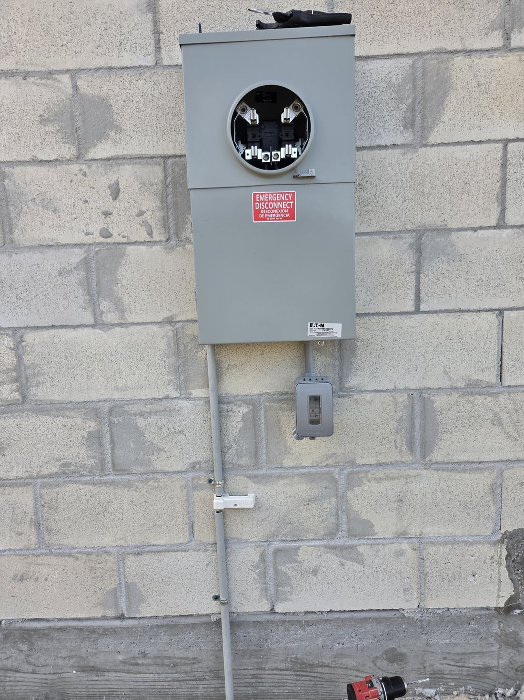

The Sharma TUG — Underground
The TUG sets the meter so the job gets its Preliminary Power Release — temporary power to build. Four moves, nothing more. Drawn from sheet E-5 of Sharma's typical-details set. The original TUG manual is still live.
The picture
Front view — sheet E-5.2
Engineering drawing version
Side view — sheet E-5.1
Engineering drawing version
That's the whole TUG. Anything more than this is not the TUG anymore — it's rough and trim work.
The four moves
MOVE 1 · Meter combo on the wall
Siemens side-by-side combo — meter LEFT, breakers RIGHT. Garage side, at the utility's meter height, plumb and solid into the structure.
The downpipe: 2-in Schedule 40 PVC, enters the meter side of the combo, 3 ft under, 90° sweep at the bottom pointed toward the street, 2 straps minimum (Mineralac best). That's a Duke Energy / SECO requirement, not a preference.
Very important — every entry: male adapter + locknut run up tight + bushing. Exception: the small ground hole typically needs no bushing.
MOVE 2 · GFI in — and MARKED
20A breaker in the breaker section. The TUG Service GFCI Outlet hangs below it on a ½-in PVC nipple — 3 in max, straight down, no straps. Listed extra-duty while-in-use (bubble) cover — never a regular flip cover (406.9(B)).
MARK IT. Breaker and outlet, marked every time. Unmarked = not done.
MOVE 3 · Ground to the UFER
#4 bare copper, continuous from the footing — coiled at the pour, straightened in the field, no splice, no clamp at grade. Up the meter side in a strapped ½-in PVC sleeve. The PVC stops at grade — below grade the copper runs bare.
No UFER on the job? Two 8-ft rods, at least 6 ft apart, acorn clamps — and the GEC to rods is never required bigger than #6 Cu (250.66(A)).
Engineering drawing version
MOVE 4 · Bridge on
The intersystem grounding bridge sits in-line on the GEC run, low near grade — its long side points LEFT, the pipe lands at its right end. The PVC is cut in two at the bridge and lands straight in with NO fittings — the only place we skip fittings. One strap on the upper piece at its halfway mark; the stub below the bridge is 3 in max — no strap on it.
From a real Sharma job




Before you roll
- Gear: Sharma usually runs Siemens — meter main combo (example: Siemens MM0202B1200, 200A main). On the truck for a TUG: the combo, a 20A breaker, a GFCI receptacle with weatherproof box and a listed extra-duty while-in-use (bubble) cover — the deep cover that stays weatherproof with a cord plugged in, not a regular flip cover, ½-inch PVC pipe for the grounding run (the copper runs in ½-in PVC), PVC male adapters, locknuts, and bushings for every pipe entry, the intersystem grounding bridge, grounding conductor and listed clamps, a 90° sweep and 2-inch Schedule 40 PVC for the underground downpipe, pipe straps — 2 minimum for the downpipe (Mineralac best, 2-hole rigid straps work too), labels.
- Location: where the plan and the utility say — on Sharma houses the meter goes on the garage side. Meter height is the utility's rule — check it, don't guess.
- Find the UFER stub first. Know where the grounding lands before the combo goes up — it decides where your PVC run goes.
Quick numbers
| Item | TUG standard |
|---|---|
| Meter combo | Siemens meter main — e.g. MM0202B1200, 200A main |
| TUG outlet | GFCI receptacle on a 20A breaker, weatherproof box + listed extra-duty while-in-use (bubble) cover — not a regular flip cover, marked |
| GFCI nipple | ½-in Schedule 40 PVC, 3 in max, straight down — no 90s, no straps |
| Pipe entries | Male adapter + locknut + bushing at every conduit entry — very important. Exception: the small ground hole, no bushing typically. Best practice if the can has a ½-in knockout toward the very back, clear of the underground pipe: ground out there, with a bushing — not typical |
| Underground downpipe | 2-in Schedule 40 PVC, 3 ft under grade, 90° sweep attached at the bottom, pointed toward the street; 2 straps minimum (Mineralac best, 2-hole rigid work too) — power company requirement (Duke Energy / SECO) |
| Grounding — typical | To the UFER, copper protected in ½-in PVC pipe; at the bridge the PVC is cut in two — one piece above, one below, no fittings |
| UFER | 20 ft min of ½-in rebar or bare copper (#4 Cu typical in the areas we work), encased 2 in+ in the footing — 250.52(A)(3) |
| GEC to UFER | #4 Cu is the largest required — 250.66(B) |
| No UFER → rods | Two 8-ft rods, min 6 ft apart; GEC to rods never larger than #6 Cu (250.66(A)) — Sharma standard ⅝-in × 8-ft rods, acorn clamps |
| Grounding bridge | Intersystem bonding bridge at the combo, bonded to the ground — 250.94 |
| Marking | Breaker + GFI marked; EMERGENCY DISCONNECT label on the door — 230.85 |
The Sharma TUG checklist
Sanjay's own six items. Tap each as you finish it; checkmarks save on this phone.
0 of 6 doneCommon TUG fails — don't be these
- GFI in but not marked. An unmarked breaker and outlet is a fail on Sharma's list — mark it, every time.
- Regular flip cover on the TUG GFI. Wrong cover — a flip lid leaves a plugged-in cord exposed to the weather. The TUG outlet takes a listed extra-duty while-in-use (bubble) cover, per 406.9(B).
- Grounding left bare down the wall. The grounding run to the UFER goes in PVC pipe for protection — that's the Sharma way and it's in the photos.
- No grounding bridge. The intersystem bridge is part of the TUG, not a later trip. Forgotten bridge = return trip.
- Loose locknuts, missing bushings, pipe stubbed in with no male adapter. It's a named checklist item because it gets missed. Check every conduit entry — then leave the small ground hole alone, it doesn't take one, typically.
- Downpipe wrong, too shallow, sweep pointed the wrong way, or short on straps. The downpipe is 2-inch Schedule 40 PVC. Three feet under, 90° sweep on the bottom pointed toward the street, 2 straps minimum — it's the power company's requirement (Duke and SECO), every time.
- Cut or buried UFER stub, nobody told. If the stub is damaged or missing, the foreman hears it from you that day.
- No wide shot. The TUG isn't complete on paper until the complete wide shot is on the job record.
Content pending final review by Sharma's master electrician. Follow your foreman and the plans — they win over any app.
Engineering reference
The full typical-details set — sheets E-0 to E-7 (underground E-5 · overhead E-6 · stacked E-7). Full-service reference: interior wiring, one-lines, materials.